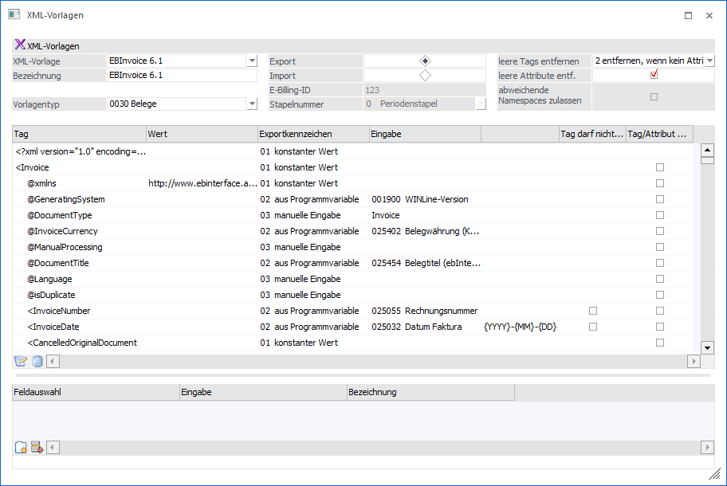
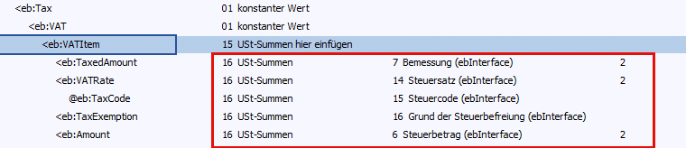
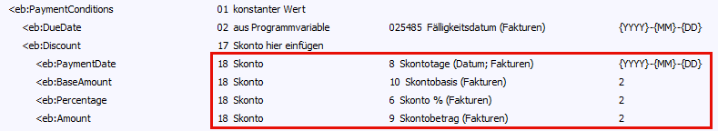
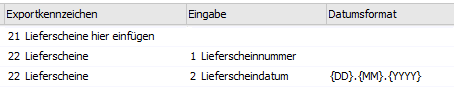
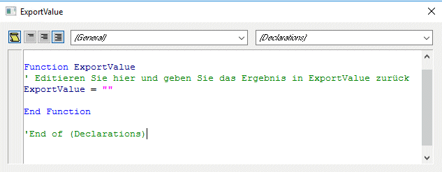
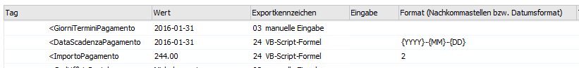
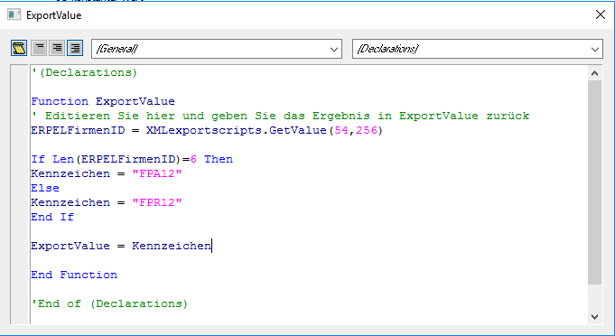
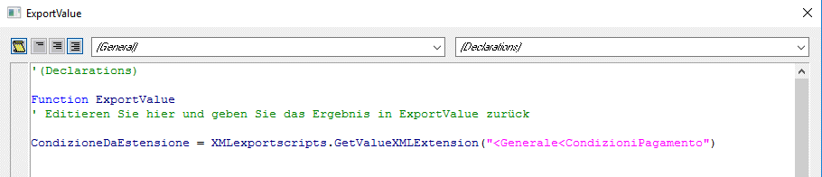
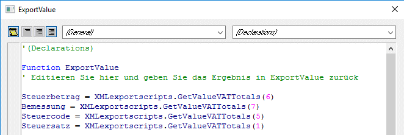
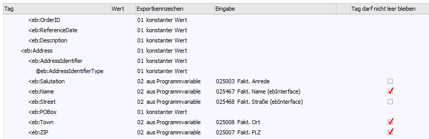

Mittels Export-Vorlage können Belege im XML-Format unter Verwendung einer Vorlage exportiert werden. Dabei können einzelne Werte, auch aus einer möglichen bereits dem Beleg anhängenden XML-Datei, übernommen bzw. eingefügt werden können. Weiteres können auch XML-Erweiterungen aus dem Personenkonto übernommen werden.

Um einzelne Werte zu beschreiben bzw. einzufügen stehen folgende "Exportkennzeichen" zur Verfügung:
ü 01 - konstanter Wert
Das Tag
wird 1:1 aus der XML-Vorlage übernommen.
ü 02 - aus Programmvariable
Wird
diese Option gewählt so kann als Wert für die XML-Datei ein Wert aus den
Bereichen "Belegkopf", "Belegmittelteil", "Personenkonto", "Vertreter",
Mandantenstamm", "Artikelstamm" sowie "Bankenstamm" eingefügt werden. Diese
eigentliche Variable muss in der Spalte "Eingabe" angegeben werden.
ü 03 - manuelle Eingabe
In der
Spalte "Eingabe" kann manuell ein fixer Wert hinterlegt werden
ü 04 - Wert aus
XML-Erweiterung
Jener Wert (Tag), der in der bereits vorhandenen XML-Datei
steht, kann auch in die neue Datei übernommen werden. Dazu wird im Feld
"Eingabe" das vorhandene Tag vorgeschlagen. Weiters steht ein Matchcode zur
Verfügung in dem zuerst das entsprechende Schema und dann das gewünschte Tag
ausgewählt werden kann. Der Pfad wird dadurch in das Eingabefeld
übernommen.
Bei dieser Option gibt es zusätzlich die Spalte
"Darunterliegende Tags übernehmen". Wird die darin enthaltene Checkbox gesetzt
so werden die entsprechenden Tags aus der Datei (die durch den Beleg erzeugt
wird) gelöscht und jene aus der vorhandenen XML-Datei verwendet. Hinweis: Ist
das Tag bzw. sind die Tags in der bestehenden Datei leer, so bleibt auch der
Bereich in der neuen Datei leer.
ü 05 - Artikelzeilen hier
einfügen
Mit dieser Option können bestehende Artikelzeilen aus der
bestehenden XML-Datei entfernt und neue Artikelzeilen aus dem "aktuellen" Beleg
eingefügt werden. Hierbei werden jedoch nur Zeilen der Typen 1 (Artikel) und 6
(Gutschrift) berücksichtigt.
D.h. wird z.B. diese Option beim Tag
"<Rechnung<Leistungsdetails<Leistung> gesetzt, so werden alle Tags
die mit diesem Wert beginnen entfernt, und die Artikelzeilen an dieser Position
eingefügt.
ü 06 - manuelle Eingabe
(Artikelzeile)
Entspricht im Prinzip einer Export-Vorbelegung. D.h. mit
dieser Funktion kann ein bestimmtes Tag mit einem Wert (Artikelnummer) vorbelegt
werden. Dieser Wert kann in der Spalte "Eingabe" angegeben werden.
ü 07 - Vertreterzeilen hier
einfügen
Mit dieser Option können bestehende Vertreterzeilen aus der
bestehenden XML-Datei entfernt und neue Vertreterzeilen aus dem "aktuellen"
Beleg eingefügt werden.
D.h. wird z.B. diese Option beim Tag
"<Rechnung<Leistungsdetails<Leistung<Referenznummer> gesetzt, so
werden alle Tags die mit diesem Wert beginnen entfernt, und die Vertreterzeilen
an dieser Position eingefügt.
ü 08 - manuelle Eingabe
(Vertreterzeile)
Entspricht im Prinzip einer Export-Vorbelegung. D.h. mit
dieser Funktion kann ein bestimmtes Tag mit einem Wert (Vertreternummer)
vorbelegt werden. Dieser Wert kann in der Spalte "Eingabe" angegeben werden.
ü 09 - Wert aus
Konto-XML-Erweiterung
Mit diesem Kennzeichen können Werte aus der
XML-Erweiterung des Personenkontos übernommen werden. Gleich wie beim
Kennzeichen "4 Wert aus XML-Erweiterung" steht ein Matchcode zur Verfügung in
dem zuerst das entsprechende Schema und dann das gewünschte Tag ausgewählt
werden kann. Der Pfad wird dadurch in das Eingabefeld übernommen.
Bei
dieser Option gibt es zusätzlich die Spalte "Darunterliegende Tags übernehmen".
Wird die darin enthaltene Checkbox gesetzt so werden die entsprechenden Tags aus
der Datei (die durch den Beleg erzeugt wird) gelöscht und jene aus der
vorhandenen XML-Datei verwendet. Hinweis: Ist das Tag bzw. sind die Tags in der
bestehenden Datei leer, so bleibt auch der Bereich in der neuen Datei leer.
ü 10 - Signatur hier einfügen
An
dieser Position wird die Signatur (aus dem Signaturserver) eingefügt. Wird
dieses Kennzeichen am Beginn eines Tags ("<Test") eingetragen, so wird die
Signatur danach eingefügt, im anderen Fall ("</Test") wird die Signatur
unmittelbar davor eingefügt. Dieses Kennzeichen muss gesetzt werden damit die
Exportvorlage im Signaturserver verwendet werden kann. Ist dieses Kennzeichen
nicht in der Exportvorlage enthalten, so kann die Vorlage im Action Server
verwendet werden.
ü 11 - Dateianhang hier
einfügen
Dieses Kennzeichen legt fest welches Tag für jeden Dateianhang
wiederholt werden soll. Ist dieses, und das Kennzeichen "12 Dateianhang", in der
Exportvorlage enthalten, so können mit dieser Vorlage im Signaturserver
Dateianhänge exportiert werden.
ü 12 - Dateianhang
An dieser
Position wird der "base64"-Code eingefügt. Ist dieses Kennzeichen und das
Kennzeichen " 11 Dateianhang hier einfügen" in der Exportvorlage enthalten, so
können mit dieser Vorlage im Signaturserver Dateianhänge exportiert werden.
ü 13 - Dateianhang:
Beschlagwortung
Hier kann aus einer Auswahllistbox das Schlagwort ausgewählt
werden dessen Inhalt in das Tag übernommen werden soll. Zusätzlich zu den
Archiv-Schlagworten (inkl. selbst definierter Archivschlagworte) stehen hier
noch sechs weitere Werte zur Verfügung: 990 - Dateiname, 991 - Dateierweiterung,
992 - Dokumentennummer (die Dateianhänge innerhalb einer XML-Datei werden hier
durchnummeriert, 993 - Dokumentennummer (ID-des Archivdokuments), 994 -
Dateierweiterung (Beschreibung); 995 - Dateierweiterung (Codeliste).
ü 14 - Wert aus XML-Erweiterung
(Artikelzeile)
Mit diesem Kennzeichen können Werte aus der XML-Erweiterung
der Belegmittelteilszeile (Artikelzeile) übernommen werden. Dieses Kennzeichen
muss für ein Tag "unterhalb" der Position "05 -Artikelzeilen hier einfügen"
verwendet werden; an anderen Stellen hat dieses Kennzeichen keine Funktion!
Gleich wie beim Kennzeichen "4 Wert aus XML-Erweiterung" steht ein Matchcode zur
Verfügung in dem zuerst das entsprechende Schema und dann das gewünschte Tag
ausgewählt werden kann. Der Pfad wird dadurch in das Eingabefeld übernommen. Bei
diesem Exportkennzeichen steht die Funktion " Darunterliegende Tags übernehmen"
NICHT zur Verfügung.
ü 15 - USt-Summen hier
einfügen
Mit diesem Exportkennzeichen werden die weiters definierten Tags
"USt Summen" (ähnlich dem Eintrag "5 Artikelzeilen hier einfügen") mehrmals
hintereinander exportiert und jeweils mit den entsprechenden Werten gefüllt.
ü 16 - USt-Summen
Bei diesem
Exportkennzeichen stehen in der Auswahllistbox die entsprechenden Werte aus dem
Bereich "Steuer" zur Verfügung. Bei diesen Werten kann die Anzahl der
Nachkommastellen festgelegt werden.

ü 17 - Skonto hier einfügen
Mit
diesem Exportkennzeichen werden die weiters definierten Tags "Skonto" (ähnlich
dem Eintrag "5 Artikelzeilen hier einfügen") mehrmals hintereinander exportiert
und jeweils mit den entsprechenden Werten gefüllt.
ü 18 - Skonto
Bei diesem
Exportkennzeichen stehen in der Auswahllistbox die entsprechenden Werte aus dem
Bereich "Steuer" zur Verfügung. Bei diesen Werten kann die Formatierung bzw.
Anzahl der Nachkommastellen festgelegt werden.

ü 19 - manuelle Eingabe
(USt-Summen)
Dieses Exportkennzeichen entspricht im Prinzip einer
Export-Vorbelegung. D.h. mit dieser Funktion kann das Tag mit einem fixen Wert
vorbelegt werden. Dieser Wert kann in der Spalte "Eingabe" angegeben werden.
ü 20 - manuelle Eingabe
(Skonto)
Dieses Exportkennzeichen entspricht im Prinzip einer
Export-Vorbelegung. D.h. mit dieser Funktion kann das Tag mit einem fixen Wert
vorbelegt werden. Dieser Wert kann in der Spalte "Eingabe" angegeben werden.
ü 21 - Lieferscheine hier
einfügen
Mit dieser Option können Daten aus, zur Rechnung zugehörigen
Lieferscheinen in die XML-Datei eingefügt werden. Dieser Exporttyp ist ein so
genannter "wiederholender Typ" (gleich wie die Exporttypen für Artikelzeilen,
Vertreterdaten, Dateianhängen, Skonti und USt-Summen). Die weiteren
Exportkennzeichen (22 und 23) legen fest, welche Werte in die darunterliegenden
Tags übernommen werden.
Hinweise
Die Auswahlmöglichkeit der
Exportkennzeichen hängt vom jeweiligen Tag ab. D.h. für "Ende-Tags"
("</…>") stehen die Kennzeichen nicht zur Auswahl. Für Attribute steht das
Kennzeichen 21 nicht zur Verfügung.
Wird im Zuge einer Sammelrechnung die
Option "Artikel kumulieren" verwendet, können die Lieferschein-Daten nicht in
die XML-Rechnung übernommen werden! Diese Option darf für die elektronische
Rechnung in Italien nicht verwendet werden.
ü 22 - Lieferscheine
Bei Auswahl
dieses Exportkennzeichens stehen in der Auswahllistbox die Möglichkeiten
"Lieferschein-Nummer" und "Lieferschein-Datum" (mit der Möglichkeit einer Angabe
der Formatierung).

ü 23 - manuelle Eingabe
(Lieferscheine)
Dieses Exportkennzeichen entspricht im Prinzip einer
Export-Vorbelegung. D.h. mit dieser Funktion kann das Tag mit einem fixen Wert
vorbelegt werden. Dieser Wert kann in der Spalte "Eingabe" angegeben werden.
ü 24 bis 29 VB-Script-Formel
(…)
Die Kennzeichen 24 bis 29 können an den jeweils gültigen Positionen in
der Struktur verwendet werden. D.h. …
ü das Kennzeichen "24" für die Belegkopf-Daten
ü das Kennzeichen "25" nur "unterhalb" des Kennzeichens "04 Artikelzeilen hier einfügen"
ü das Kennzeichen "26" nur "unterhalb" des Kennzeichens "07 Vertreterzeilen hier einfügen"
ü das Kennzeichen "27" nur "unterhalb" des Kennzeichens "15 USt-Summen hier einfügen"
ü das Kennzeichen "28" nur "unterhalb" des Kennzeichens "17 Skonto hier einfügen"
ü das Kennzeichen "29" nur "unterhalb" des Kennzeichens "21 Lieferscheine hier einfügen"
Für "Ende-Tags" stehen diese
Kennzeichen nicht zur Verfügung, für Attribute können sie jedoch verwendet
werden.
Wird eines dieser Kennzeichen ausgewählt (und es ist noch kein Script
in der Zeile vorhanden), wird das Fenster zum Bearbeiten des Scripts automatisch
geöffnet.

Beim Ändern des Kennzeichens
wird ein bereits vorhandenes Script nicht sofort verworfen, sondern bleibt bis
zum Speichern der Vorlage erhalten.
Für diese Kennzeichen 24 bis 29 steht
auch die Spalte für die Eingabe einer Formatierung in der Zeile zur Verfügung.
Hier können Nachkommastellen, falls das Script einen numerischen Wert
zurückliefert, oder ein Datumsformat eingetragen werden.

Hinweis
Beim Bearbeiten des Scripts stehen unter "XMLExportScripts" folgende Funktionen zur Verfügung:
ü GetValue (View, Var)
Diese
Funktion liefert den Wert der entsprechenden Variable zurück.
Auch die
dynamisch ermittelten Werte stehen hier zur Verfügung (also alle Werte, die beim
Typ "02 aus Programmvariable" ausgewählt werden können).
Diese Funktion steht
für alle VB-Script-Exportkennzeichen zur Verfügung.
Die Variablen aus dem
Belegkopf (T025), dem Kontenstamm (T051, T054, T055, T058), dem Mandantenstamm
(T001) und dem Bankenstamm (T286) können immer verwendet werden.
Beim
Exportkennzeichen "25 VB-Script-Formel (Artikelzeile)" steht zusätzlich die
Belegmittelteilszeile (T026) zur Verfügung.
Beim Typ "26 VB-Script-Formel
(Vertreterzeile) steht der Vertreterstamm (T034) zur Verfügung.
Die Werte
werden mit entsprechendem Datentyp zurückgeliefert (dies gilt auch für die
dynamischen Werte und die Zusatzfelder).
Die Übergabewerte sind
Tabellen-, und Variablennummer. D.h. z.B. für 054256 in der Auswahllistbox
(=ERPEL-Firmen ID) muss beim Aufruf der Funktion GetValue (54,256) übergeben
werden.

ü GetValueXMLExtension
(XMLPath)
Diese Funktion lädt einen Wert aus der XML-Erweiterung des Beleges
und steht nur für das Exportkennzeichen "24 VB-Script-Formel" zur Verfügung. Der
XML-Pfad muss im selben Format übergeben werden wie in der XML-Vorlage beim
entsprechenden Exportkennzeichen.

ü GetValueXMLExtensionProductLine
(XMLPath)
Diese Funktion lädt einen Wert aus der XML-Erweiterung der aktiven
Artikelzeile des Beleges, und steht nur für das Exportkennzeichen "25
VB-Script-Formel (Artikelzeile)" zur Verfügung. Der XML-Pfad muss im selben
Format übergeben werden, wie in der XML-Vorlage beim entsprechenden
Exportkennzeichen.
Wenn die Erweiterung und ein entsprechender Wert vorhanden
sind, wird dieser (immer als Text) zurückgeliefert. Andernfalls bringt die
Funktion einen Leerstring zurück.
ü GetValueXMLExtensionAccount
(XMLPath)
Diese Funktion lädt einen Wert aus der XML-Erweiterung des Kontos
und steht nur für das Exportkennzeichen "24 VB-Script-Formel" zur Verfügung. Der
XML-Pfad muss im selben Format übergeben werden wie in der XML-Vorlage beim
entsprechenden Exportkennzeichen. Wenn die Erweiterung und ein entsprechender
Wert vorhanden sind, wird dieser (immer als Text) zurückgeliefert. Andernfalls
bringt die Funktion einen Leerstring zurück.
ü GetValueVATTotals
(FieldNr)
Diese Funktion liefert den ausgewählten Wert (mit entsprechendem
Datentyp) aus den aktiven "USt-Summen" zurück. Die Funktion steht für das
Exportkennzeichen "27 VB-Script-Formel (USt-Summen)" zur Verfügung (kann daher
nur "unterhalb" von "USt-Summen hier einfügen" verwendet werden). Für die
Übergabe können, die für das entsprechende Exportkennzeichen in der
Auswahllistbox verfügbaren, Feldnummern verwendet werden.

ü GetValueDiscount
(FieldNr)
Diese Funktion liefert den ausgewählten Wert (mit entsprechendem
Datentyp) aus dem aktiven "Skonto" zurück und steht für das Exportkennzeichen
"28 VB-Script-Formel (Skonto)" zur Verfügung. Für die Übergabe können die, für
das entsprechende Exportkennzeichen in der Auswahllistbox verfügbaren
Feldnummern verwendet werden.
ü GetValueDeliveryNotes
(FieldNr)
Diese Funktion liefert den ausgewählten Wert (mit entsprechendem
Datentyp) für den aktiven "Lieferschein" zurück. Sie steht für das
Exportkennzeichen "29 VB-Script-Formel (Lieferscheine)" zur Verfügung. Für die
Übergabe können die, für das entsprechende Exportkennzeichen in der
Auswahllistbox verfügbaren Feldnummern verwendet werden.
Ø Eingabe
In der Spalte "Eingabe" muss, je nach gewähltem Wert in der Spalte "Exportkennzeichen", die jeweilige Auswahl getroffen, bzw. Eingabe getätigt werden.
Ø Datumsformat / Nachkommastellen
Neben der Datumsformatierung (für Datumsfelder steht eine zusätzliche Spalte für das Datumsformat zur Verfügung -> siehe dazu auch Datum beim Import) steht auch bei numerischen Werten eine weitere Spalte zur Verfügung, in der die Anzahl der zu exportierenden Nachkommastellen festgelegt werden kann. Die maximale Anzahl an Nachkommastellen beträgt 10.
Ø Tag darf nicht leer bleiben
Bei Vorlagen für den Belegexport kann in der Spalte "Tag darf nicht leer bleiben" die Checkbox aktiviert werden was bedeutet, dass im Falle eines nicht vorhandenen Eintrages der Export mit einer entsprechenden Meldung abgebrochen wird.

Ø Tag/Attribut muss erhalten bleiben
Wird diese Option aktiviert, so bleibt das Tag bzw. das Attribut auch dann erhalten, wenn kein Wert zugeordnet wird.